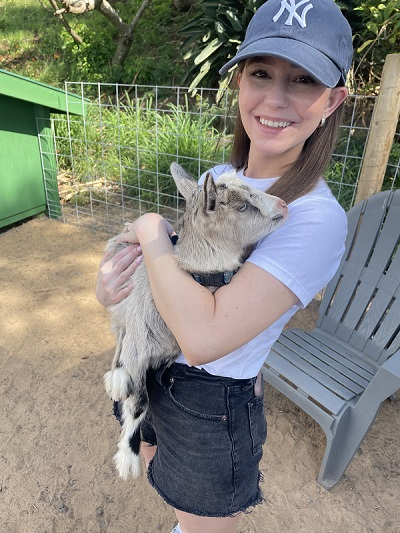
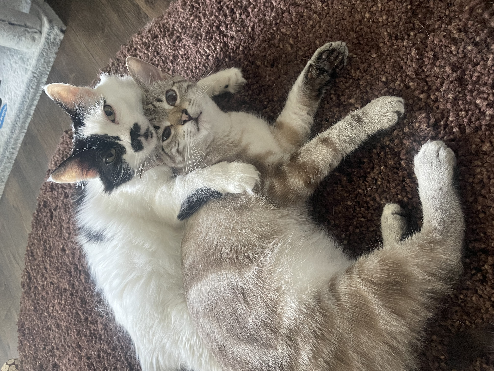
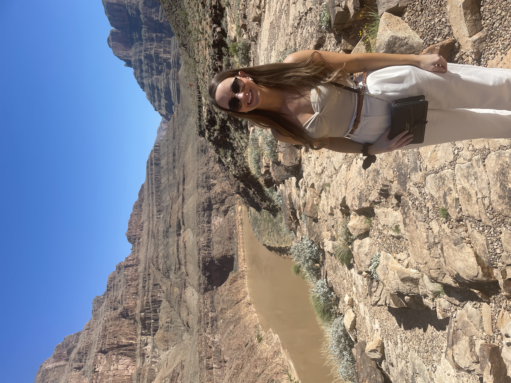

Her second favorite animal, Mariel had the chance to play with baby goats at the Surfing Goat Dairy Farm in Maui, Hawaii.

Arya and Bugz, her two favorite things in the world.Traveling to NYC for the first time, Mariel stands atop The Edge observation deck in Manhattan.Grand Theft Auto: San Andreas, Red Dead Redemption 2, and The Last of Us - some of Mariel's favorite games. Mariel at the Bellagio Conservatory and Botanical Gardens in Las Vegas, Nevada.

Taking in the sights at Grand Canyon National Park.